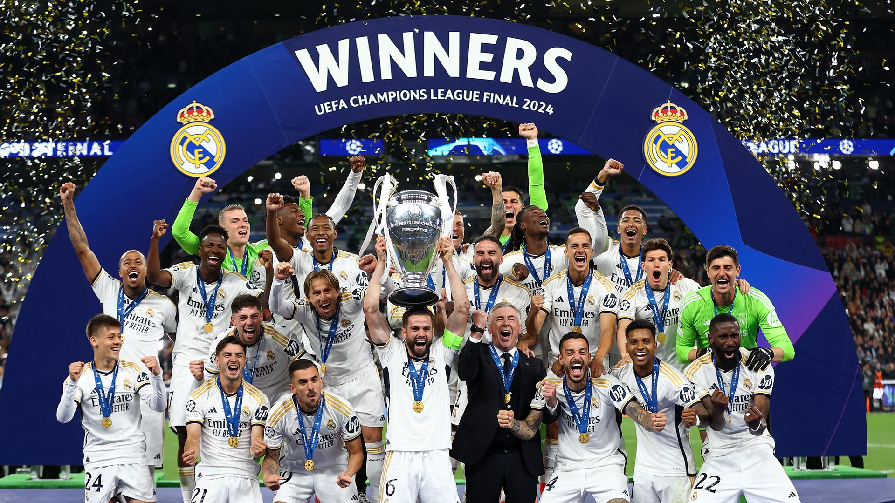

La final de la Champions se disputó en Wembley, Inglaterra. Los finalistas fueron el Real Madrid y el Borrusia Dortmund
En la primera parte no hubo ningún gol pero hubo varias ocasiones de peligro causadas por el Borrussia Dortmund, paradas por el portero del Real Madrid, el partido parecía muy igualado
En la segunda parte sobre el minuto 74, Dani Carvajal marcó de cabeza para dar el 1-0 al Real Madrid
Para sentenciar el partido, Vinicius Junior marcaría el 2-0, dando la victoria al Real Madrid
Esta victoria da el título nº15 de la UEFA Champions League al Real Madrid
